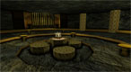

Track Listing
Avalon: the Fallen
Avalon: the Fallen - Anger Issues Interactive
Avalon: the Fallen is a puzzle/adventure game set in a mythological, celtic world. The music tracks are aimed at being unnerving and haunting while creating a feel appropriate to the setting, as shown with Sacreligious or Lost Avalon. I was also responsible for all the sound effects heard throughout the gameSandbagger - Game4Flood Fund
Aimed at helping Brisbane after the 2011 floods, Sandbagger was a simple arcade game. The music was addictive and catchy as demonstrated by its main Game Music. I also developed the sound effects used in the game.Military Internship - VR Solutions
I was hired by VR Solutions as both an audio and level designer. I created realistic weapon and vehicle sound effects, as well as scripted voice commands and shouts. I also created a simple 'warzone' background track for the menu, as well as a Music TrackThe Day Before Christmas - Pullenvale State Primary School
I was approached by a teacher from a local school to produce some music for her class. She had written the poem and recorded the children reciting it, which I then used to create music for the children to dance to so they could tell the story through their movements.

Mourning with the Bones - 48 Hour Game Making Competition 2010
Once again teaming up with the team at Anger Issues Interactive, we joined the competition with high hopes. The game was designed as a film noir experience, complete with dry wit and sarcastic phrases by the lead character as well as dark, brooding music tracks like Mourning with the Bones and EntombmentSpaceshot!
Spaceshot! is a game I have created in a very retro style. I especially got this across in the sound and music of the game, which you can download here!